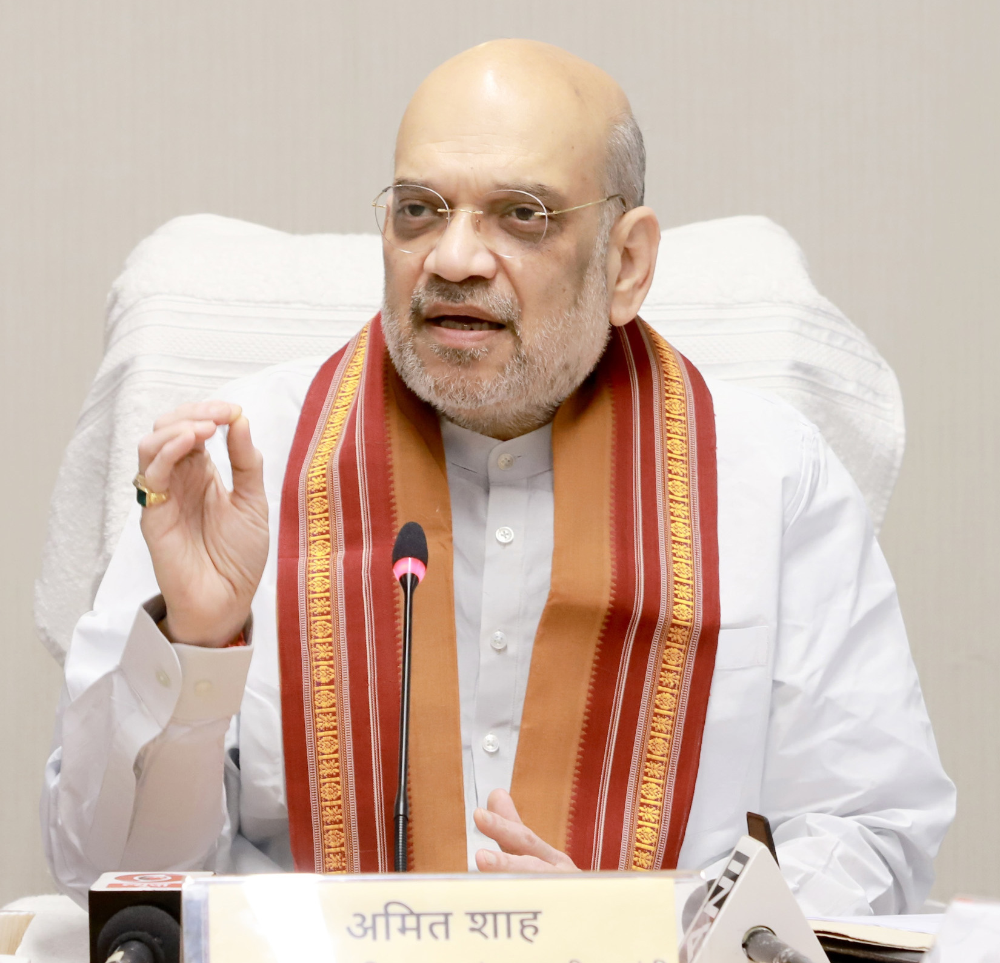

Amit Shah Amit Anil Chandra Shah (born 22 October 1964) is an Indian politician who is currently serving as the 31st Minister of Home Affairs since 2019 and the 1st Minister of Co-operation of India since 2021. He served as the 10th President of the Bharatiya Janata Party (BJP) from 2014 to 2020. He has also served as chairman of the National Democratic Alliance (NDA) since 2014. He was elected to the lower house of Parliament, Lok Sabha, in the 2019 Indian general elections from Gandhinagar. Earlier, he had been elected as a member of the upper house of Parliament, Rajya Sabha, from Gujarat from 2017 to 2019.

Amit Shah giving speech
Quote
Our mindset is not such that we will remain in power till eternity
Amit Shah